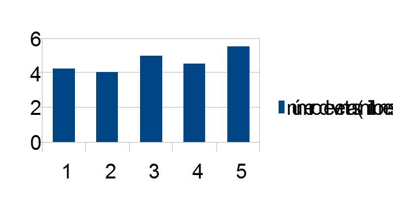

Apple .Inc ha creado para estas computadoras gran variedad de accesorios como ratones, teclados y estaciones wi´-fi exclusivas para los mac.


Mac es la abreviatura de macintosh fue y es la linea de computadores personales diseñada, desarrollada y comercializada por Apple Inc. El Mac terminó por convertirse en la línea estándar de desarrollo de los computadores de Apple, al desaparecer la línea evolutiva del Apple II.
Dentro de los mac hay dos modelos el mcbook que es portátil de Apple y los modelos de escritorio.
_
Apple .Inc ha creado para estas computadoras gran variedad de accesorios como ratones, teclados y estaciones wi´-fi exclusivas para los mac.